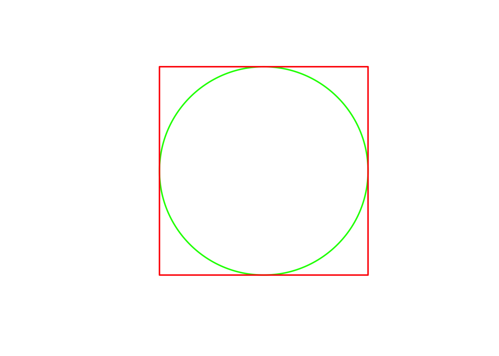
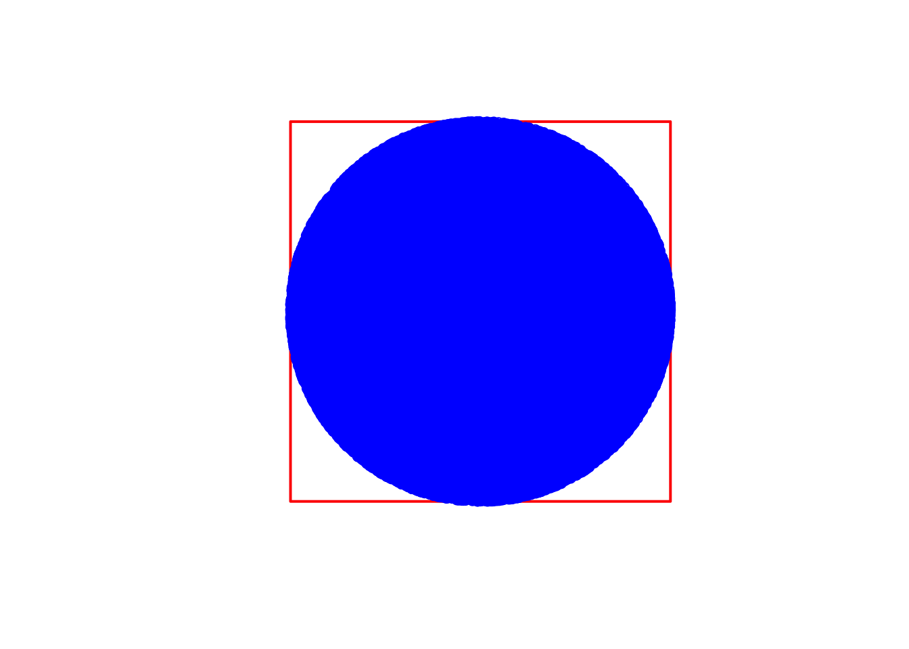
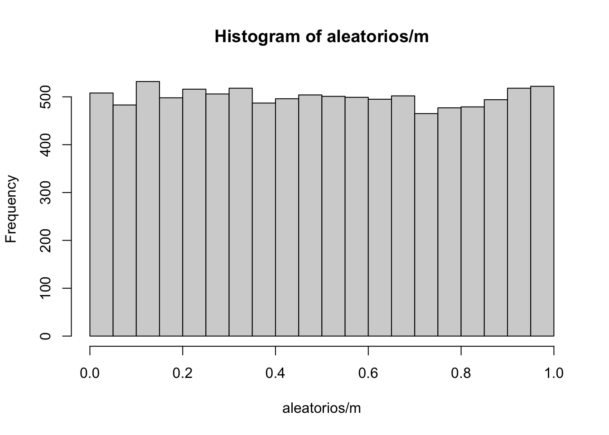
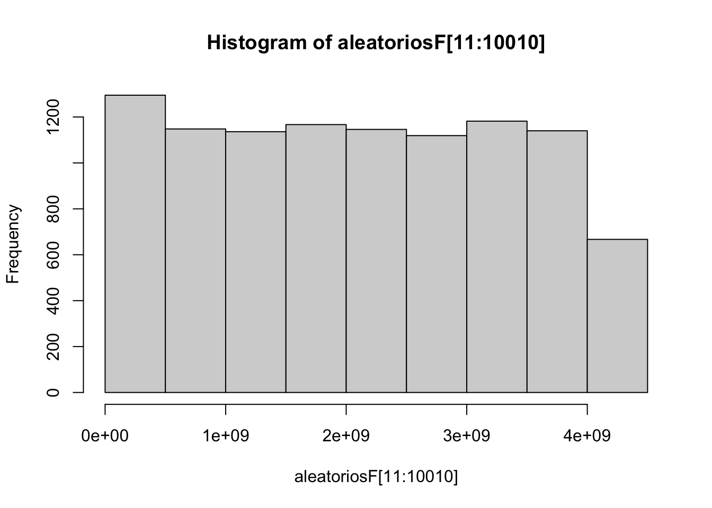
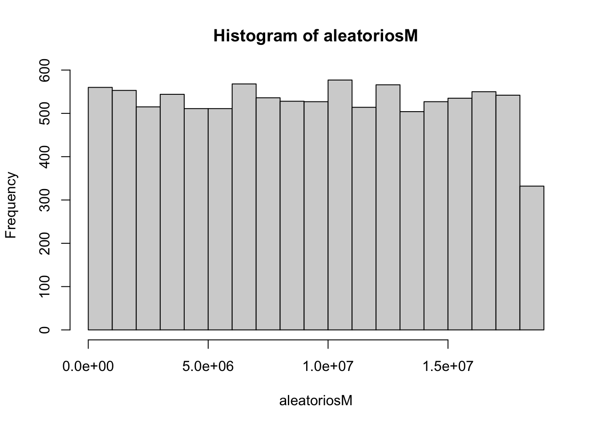

cuantas_veces <- vector(mode = "integer", length = 1000)
for(i in 1:1000)
{
cuantas_veces[i] <- sample(0:1, size = 1)
}
sum(cuantas_veces)[1] 505Simulation by a computer is simply doing an experiment so we understand the possible results. For example, if we want to understand the distribution of the mean of tossing a coin one hundred times, we create a function that chooses 0 and 1 with the same probability, do it 100 times and compute the average, and then repeat this experiment thousands of times to understand the distribution of the mean. In these fist classes we will try to simulate uniform and normal distributions, for which we need to understand Pseudo Random Number Generators and Modular Arithmetic. But we will start with simple cases.
Assume a fair coin, that is, heads and tails have equal probability. To simulate one toss we just sample the set {0,1} with equal probabilities, sample(0:1, size = 1) As explained above, we do this a number of times (one hundred times, in the code below) and compute the sum, which will be the number of times the number 1 was obtained (your choice, 1 is heads or tails, it does not matter).
cuantas_veces <- vector(mode = "integer", length = 1000)
for(i in 1:1000)
{
cuantas_veces[i] <- sample(0:1, size = 1)
}
sum(cuantas_veces)[1] 505The code above is easy to understand, but not good programming practice. Improve the code, reducing it to a single lines using the sample instruction properly.
sum(sample(0:1, size = 1000, replace = TRUE))[1] 493Observe that, if you run the code several times, you will get different results. Remember that to make the code reproducible, that is, a code that produces always the same result so it can be checked by anyone, you have to set the seed. We will learn more about the seed later.
set.seed(09022026)
sum(sample(0:1, size = 1000, replace = TRUE))[1] 484Let us start with a very simple simulation: we bought every year a ticket for the Christmas lottery, always the same number. How many years will we ahve to wait till we win the big price?
The simulation is easy:
a <- sample(1:100000, size=1)
b <- 0
i <- 0
while(b != a)
{
b <- sample(1:100000, size = 1)
i <- i + 1
}
paste("The number of years needed to win the lottery is: ", i)[1] "The number of years needed to win the lottery is: 89889"Run the above simulation 1000 times (or any other big number of times you want), storing the variable “i” in a vector, and then do a histogram of it. Do you see anything to comment on?
veces <- 10
ganar <- vector(mode = "integer", length = veces)
minumero <- sample(1:100000, size=1)
for (simulacion in 1:veces)
{
ganador <- 0
contador <- 0
while(ganador != minumero)
{
ganador <- sample(1:100000, size = 1)
contador <- contador + 1
}
ganar[simulacion] <- contador
}
summary(ganar) Min. 1st Qu. Median Mean 3rd Qu. Max.
836 13905 30338 54491 72244 203247 hist(ganar)
Another use of simulation is to do complex computations (the Monte Carlo Method was invented for this purpose in the Manhattan Project). For example, suppose we want to calculate th area of a disc of radius 1. By maths we know it is equal to \(\pi\). We can start “throwing” points in a square of side 2, with a circle centered within the square, and find the proportion of points that “fall” within the circle. That proportion will give us the area of the circle.
plot(c(-1, 1), c(-1, 1), type = "n", asp = 1, xlab = "", ylab = "", axes = FALSE)
symbols(0, 0, circles = 1, inches = FALSE, add = TRUE, lwd = 2, fg = "green")
rect(-1, -1, 1, 1, lwd = 2, border = "red")
And now we “throw” points, coloring in blue those that are within the circle.
plot(c(-1, 1), c(-1, 1), type = "n", asp = 1, xlab = "", ylab = "", axes = FALSE)
symbols(0, 0, circles = 1, inches = FALSE, add = TRUE, lwd = 2, fg = "green")
rect(-1, -1, 1, 1, lwd = 2, border = "red")
x <- runif(100000, min = -1, max = 1)
y <- runif(100000, min = -1, max = 1)
dentro <- 0
cuantos <- 100000
indices <- vector(mode = "integer")
for (i in 1:cuantos)
{
if(x[i]^2 + y[i]^2 <= 1)
{
indices <- c(indices, i)
dentro <- dentro + 1
}
}
points(x[indices], y[indices], col="blue")
The area of the circle is given as the proportion of points colored in blue, multiplied by 4 (Do the math!)
paste("The are of the circle is", 4 * dentro / cuantos,
"and the value of pi is", round(pi, 5))[1] "The are of the circle is 3.149 and the value of pi is 3.14159"Computers, by the way they work, cannot generate random numbers, as everything a computer does is controlled by a precise, well defined operation or instruction. However, computers can generate what are known as Pseudo Random Numbers, which are sequences of numbers that cannot be distinguished from random numbers for all practical purposes. More precisely, a good deterministic random number generator will satisfy the following:
- There should be a high probability that generated sequences of random numbers are different from each other.
- A sequence of numbers is indistinguishable from “truly random” numbers according to specified statistical tests, like runs tests or poker tests.
- It should be impossible, for all practical purposes, for an attacker to calculate or guess any previous numbers in the sequence.
Some of the most used PRNGs (pseudo random number generator) use modular arithmetic, that we will review next. For a list of PRNGs check this Wikipedia page
Consider two positive integers \(a\) and \(q\). We can always divide \(a\) by \(q\), and might get a reminder: \(a = b\,q + r\), where \(0 \leq r < q\). In modular arithmetic we operate with the reminders, in certain sense. The number \(q\) is known as the modulus. For example, for modulus 11 we have [ 7 * 5 = 35 = 3 * 11 + 2, ] so \(7 * 5 \equiv 2\,(\text{mod}\,11)\). Below you have the multiplication table for 11, though you can replace the variable “modulo” for whatever positive number that you want, other than 1. We have used the number 11 instead of 0, as they are equivalent modulo 11. In R the remainder is obtained with the symbol %%
library(gt)
modulo <- 11
matriz <- matrix(rep(modulo + 1,modulo^2), nrow=modulo, byrow = TRUE)
for(i in 0:modulo) {for(j in 0:modulo){matriz[i,j] <- (i*j) %% modulo}}
mis.datos <- as.data.frame(matriz)
colnames(mis.datos) <- 1:modulo
gt(mis.datos, rownames_to_stub = TRUE)| 1 | 2 | 3 | 4 | 5 | 6 | 7 | 8 | 9 | 10 | 11 | |
|---|---|---|---|---|---|---|---|---|---|---|---|
| 1 | 1 | 2 | 3 | 4 | 5 | 6 | 7 | 8 | 9 | 10 | 0 |
| 2 | 2 | 4 | 6 | 8 | 10 | 1 | 3 | 5 | 7 | 9 | 0 |
| 3 | 3 | 6 | 9 | 1 | 4 | 7 | 10 | 2 | 5 | 8 | 0 |
| 4 | 4 | 8 | 1 | 5 | 9 | 2 | 6 | 10 | 3 | 7 | 0 |
| 5 | 5 | 10 | 4 | 9 | 3 | 8 | 2 | 7 | 1 | 6 | 0 |
| 6 | 6 | 1 | 7 | 2 | 8 | 3 | 9 | 4 | 10 | 5 | 0 |
| 7 | 7 | 3 | 10 | 6 | 2 | 9 | 5 | 1 | 8 | 4 | 0 |
| 8 | 8 | 5 | 2 | 10 | 7 | 4 | 1 | 9 | 6 | 3 | 0 |
| 9 | 9 | 7 | 5 | 3 | 1 | 10 | 8 | 6 | 4 | 2 | 0 |
| 10 | 10 | 9 | 8 | 7 | 6 | 5 | 4 | 3 | 2 | 1 | 0 |
| 11 | 0 | 0 | 0 | 0 | 0 | 0 | 0 | 0 | 0 | 0 | 0 |
This PRNG starts with a seed, \(x_0\), and at each step it generates a new number by the following expression:
\[ x_{n+1} = (x_n * a + c) (\text{mod}~m) \] The numbers \(a\) and \(c\) are known as the multiplier and the increment, respectively.
linearprng <- function(x, modulus, multiplier, increment)
{
return((x * multiplier + increment) %% modulus)
}
x0 <- 6 # seed
m <- 65537 # modulus
a <- 75 # multiplier
c <- 74 # increment
size <- 10000
aleatorios <- vector(mode = "double", length = 0)
aleatorios <- x0
for (i in 2:size)
{
aleatorios <- c(aleatorios, linearprng(aleatorios[i-1], m, a, c))
}
hist(aleatorios)
To check for randomness we will do a hypothesis test with two different packages: DescTools and randtests. We first define our function.
random_hypothesis_testing <- function(data, significance_level = 0.05)
{
null_hypothesis <- "The sample is random."
alternative_hypothesis <- "The sample is not random."
random_test_1 <- RunsTest(data)$p.value
random_test_2 <- runs.test(data)$p.value
if (random_test_1 <= significance_level & random_test_2 <= significance_level) {
cat(paste("Reject the null hypothesis: ", alternative_hypothesis))
} else if (random_test_1 > significance_level & random_test_2 > significance_level) {
cat(paste("Fail to reject the null hypothesis: ", null_hypothesis))
} else {
cat(paste("Something is wrong, p-values indicate different results."))
}
cat(paste("\n\np-values for DescTools and tseries packages\n", random_test_1))
cat(paste("\n", random_test_2))
}And now we apply it to the sequence obtained with out PRNG.
library(DescTools)
library(randtests)
random_hypothesis_testing(aleatorios)Fail to reject the null hypothesis: The sample is random.
p-values for DescTools and tseries packages
0.352347004906401
0.347193448688607And now we can put to use the above techniques to simulate a Uniform Distribution between 0 and 1 by dividing the (pseudo)random numbers obtained by the modulus m.
hist(aleatorios / m)
Let us check that we are actually getting a uniform distribution with the Kolmogorov-Smirnov goodness of fit test. As earlier, we first define the function to do the test, and then we apply it to our results.
unif_hypothesis_testing <- function(data, significance_level = 0.05)
{
# Define the null hypothesis
null_hypothesis <- "The sample is uniformly distributed between 0 and 1."
# Define the alternative hypothesis
alternative_hypothesis <- "The sample is not uniformly distributed between 0 and 1."
# Perform the Kolmogorov-Smirnov test
# ks.test(data, "punif", 0, 1)
# Compare the p-value to the significance level
hypothesis_test <- ks.test(data, "punif", 0, 1)
if (hypothesis_test$p.value <= significance_level) {
cat(paste("Reject the null hypothesis: ", alternative_hypothesis))
} else {
cat(paste("Fail to reject the null hypothesis: ", null_hypothesis))
}
cat(paste("\np-value = ", hypothesis_test$p.value))
}unif_hypothesis_testing(aleatorios / m)Fail to reject the null hypothesis: The sample is uniformly distributed between 0 and 1.
p-value = 0.587497870449582Below you can see two other PRNGs. ::: {.callout-tip title=“Exercise 3”} Generate a sequence of numbers with each of the generators below, test for randomness, and then think how to use those sequences for simulating a uniform distribution. Check also the goodness of fit of your idea. :::
Recall the Fibonacci sequence: we start with \(F_1 = F_2 = 1\), and then we get each number in the sequence by adding the previous two numbers. Thus \(F_3 = F_1 + F_2 = 1 + 1 = 2\), \(F_4 = 2 + 1 = 3\), \(F_5 = 3 + 2 = 5\)…
The Lagged Fibonacci Generator follows a similar idea.
j <- 7
k <- 10
m <-2^32
aleatoriosF <- vector(mode = "double", length = 0)
aleatoriosF <- c(aleatorios, 1:10)
size <- 100010
for (i in 11:size)
{
aleatoriosF[i] <- (aleatoriosF[i-j] + aleatoriosF[i-k]) %% m
}
hist(aleatoriosF[11:10010])
What is the mathematical idea behind the above PRNG? Look at the code.
This PRNG squares a number (modulo some fixed number) to get the next number in the sequence. The algorimth uses three parameters: \(p\), \(q\) and \(x_0\). The numbers \(p\) and \(q\) must be primes, congruent to 3 modulo 4, and safe primes. This means that \(p\) and \(q\) are of the form twice a prime plus 1; equivalently, \(\frac{p-1}{2}\) and \(\frac{q-1}{2}\) are prime numbers. Here The initial value or seed, \(x_0\) should be coprime to \(p\) and \(q\); it suffices, for example, to take \(x_0<p,\,q\).
p <- 3779
q <- 4919
M <- p * q
x0 <- 3
# Check condition on reminder of p and q
if (!(p %% 4 == 3) | !(q %% 4 == 3)) {print("Primes are not correct")}
aleatoriosM <- vector(mode = "double", length = 0)
aleatoriosM <- x0
size <- 10000
for (i in 2:size)
{
aleatoriosM <- c(aleatoriosM, (aleatoriosM[i-1]^2) %% M)
}
hist(aleatoriosM)